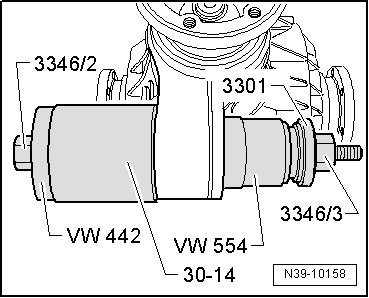
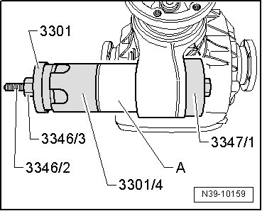

Rear Final Drive
Driveshaft Flange Bonded Rubber Bushing
Special tools, testers and auxiliary items required
• Thrust piece (VW 442)
• Thrust piece (VW 554)
• Sleeve (30 - 14)
• Alignment fixture (3301)
• Alignment fixture (3346)
• Alignment fixture (3347)
Always grease spindle (3346/2) with molybdenum grease before inserting.
Removing
- Pull out bonded rubber bushing.

Installing
- Pull in bonded rubber bushing - A - to stop.
